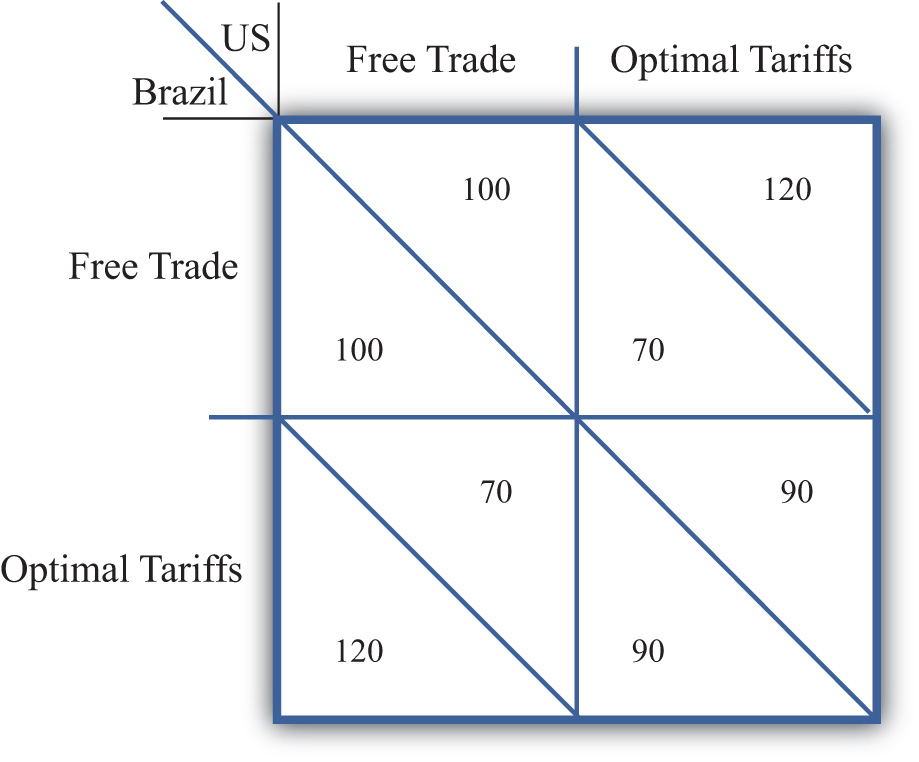
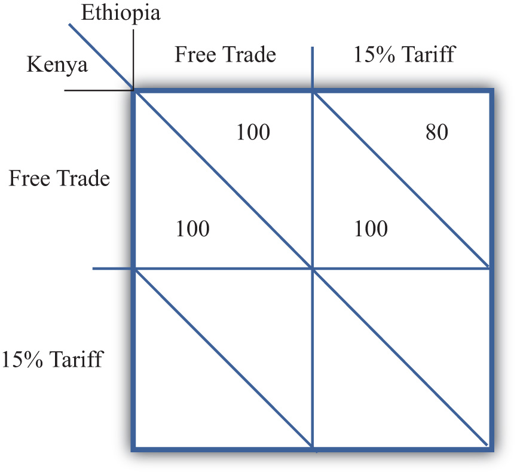
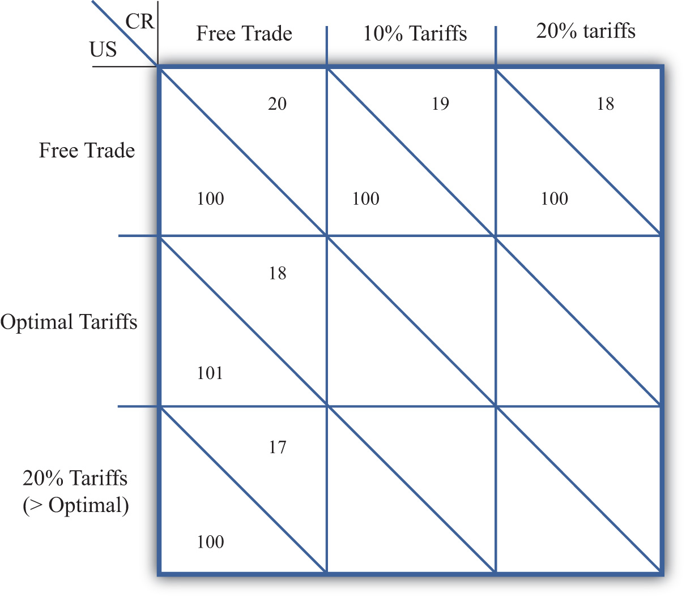
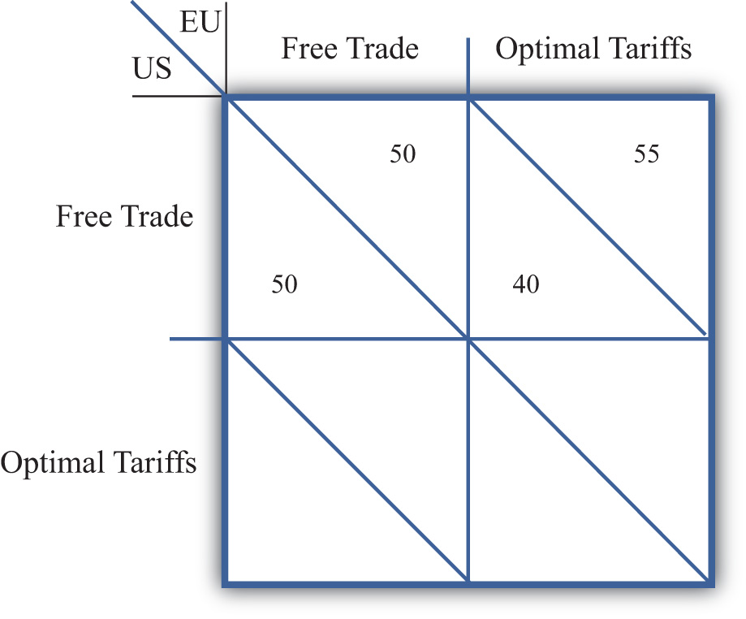

The analysis of tariffs in a perfectly competitive market demonstrates that if a large country imposes a relatively small tariff, or if it imposes an optimal tariff, then domestic national welfare will rise but foreign national welfare will fall. The partial equilibrium analysis shows further that national welfare losses to the exporting nation exceed the national welfare gains to the importing nation. The reason is that any tariff set by a large country also reduces world welfare.
If we assume that nations are concerned about the national welfare effects of trade policies, then the tariff analysis provides a rationale for protectionism on the part of large importing nations. However, if large importing nations set optimal tariffs on all or many of their imported goods, the effect internationally will be to reduce the national welfare of its trading partners. If the trade partners are also concerned about their own national welfare, then they would likely find the optimal tariffs objectionable and would look for ways to mitigate the negative effects.
One effective way to mitigate the loss in national welfare, if the trade partners are also large countries, is to retaliate with optimal tariffs on your own imported goods. Thus if country A imports wine, cheese, and wheat from country B, and A places optimal tariffs on imports of these products, then country B could retaliate by imposing optimal tariffs on its imports of, say, lumber, televisions, and machine tools from country A. By doing so, country B could offset its national welfare losses in one set of markets with national welfare gains in another set.
Figure 7.20 A Trade Policy Game
We examine the effects of optimal tariffs and retaliation more formally by using a simple game theory setup. Suppose the players in the game are the governments of two large countries, the United States and Brazil. Suppose the United States imports a set of products (A, B, C, etc.) from Brazil, while Brazil imports a different set of products (X, Y, Z, etc.) from the United States. We imagine that each country’s government must choose between two distinct trade policies, free trade and optimal tariffs. Each policy choice represents a game strategy. If the United States chooses free trade, then it imposes no tariffs on imports of goods A, B, C, and so on. If the United States chooses optimal tariffs, then it determines the optimal tariff in each import market and sets the tariff accordingly. Brazil is assumed to have the same set of policy choices available.
In Figure 7.20 "A Trade Policy Game", U.S. strategies are represented by the two columns; Brazilian strategies correspond to the two rows. The numbers represent the payoffs to the countries, measured as the level of national welfare realized in each country in each of the four possible scenarios. For example, if the United States chooses a free trade policy and Brazil chooses to impose optimal tariffs, then the payoffs are shown in the lower left-hand box. The Brazilian payoff is below the diagonal, while the U.S. payoff is above the diagonal. Thus Brazil gets 120 units of welfare, while the United States gets 70 units.
Note that the size of the numbers used in the example is immaterial, but how they relate to the numbers in alternate boxes is not. We will use the results from the tariff analysis section to inform us about the relationship between the numbers.
To begin, let’s assume that each country receives 100 units of national welfare when both the United States and Brazil choose free trade. If Brazil decides to impose optimal tariffs on all of its imports and the United States maintains its free trade position, then a partial equilibrium welfare analysis suggests the following:
Similarly, if the United States imposes optimal tariffs on all of its imports while Brazil maintains free trade, then the countries will realize the payoffs in the upper right-hand box. The United States would get 120 units of welfare, while Brazil would get 70. To keep the example simple, we are assuming that the effects of tariffs are symmetric. In other words, the effect of U.S. optimal tariffs on the two countries is of the same magnitude as the effects of Brazilian tariffs.
Finally, if both countries set optimal tariffs against each other, then we can simply sum up the total effects. Since each country’s actions raise its own welfare by 20 units and lower its trade partner’s welfare by 30 units, when both countries impose tariffs, national welfare falls to 90 units in each country.
To determine which strategy the two governments would choose in this game, we need to identify the objectives of the players and the degree of cooperation. Initially, we will assume that each government is interested in maximizing its own national welfare and that the governments do not cooperate with each other. Afterward, we will consider the outcome when the governments do cooperate.
A noncooperative solution is a set of strategies such that each country maximizes its own national welfare subject to the strategy chosen by the other country. Thus, in general, if the U.S. strategy (r) maximizes U.S. welfare, when Brazil chooses its strategy (s) and if Brazil’s strategy (s) maximizes Brazil’s welfare when the United States chooses strategy (r), then the strategy set (r,s) is a noncooperative solution to the game. A noncooperative solution is also commonly known as a Nash equilibrium.
One can determine a Nash equilibrium in a simple two-player, two-strategy game by choosing a strategy for one of the players and answering the following series of questions:
Continue this series of questions until neither player switches its strategy. Then this set of strategies is a Nash equilibrium.
In the trade policy game, the Nash equilibriumA game equilibrium in which every player is simultaneously maximizing his own profit given the choices being made by the other players. or noncooperative solution is the set of strategies (optimal tariffs, optimal tariffs). That is, both the United States and Brazil would choose to implement optimal tariffs. Why?
First, suppose the United States chooses the free trade strategy. Brazil’s optimal policy, given the U.S. choice, is to implement optimal tariffs. This is because 120 units of national welfare are greater than 100 units. Second, if Brazil chooses optimal tariffs, then the optimal policy of the United States is optimal tariffs, since 90 units of welfare are greater than 70 units. Finally, if the United States chooses optimal tariffs, then Brazil’s best choice is optimal tariffs since 90 is greater than 70.
A cooperative solution to a game is a set of strategies that would maximize the sum total of the benefits accruing to the players. In some instances, a cooperative outcome may require the transfer of goods or money between players to assure that each player is made better off than under alternative strategy choices. In this game, such a transfer is not required, however.
The cooperative solution in the trade policy game is the set of strategies (free trade, free trade). At this outcome, total world welfare is at a maximum of 200 units.
First of all, notice that in the noncooperative game, each country is acting in its own best interests, yet the outcome is one that is clearly inferior for both countries relative to the cooperative strategy set (free trade, free trade). When both countries set optimal tariffs, each country realizes 90 units of welfare, while if both countries pursued free trade, each country would realizes 100 units of welfare. This kind of result is often referred to as a prisoner’s dilemma outcome. The dilemma is that pursuit of self-interest leads to an inferior outcome for both participants.
However, without cooperation, it may be difficult for the two countries to realize the superior free trade outcome. If both countries begin in free trade, each country has an individual incentive to deviate and implement optimal tariffs. And if either country does deviate, then the other would either suffer the welfare losses caused by the other country’s restrictions or retaliate with tariff increases of its own in order to recoup some of the losses. This scenario in which one country retaliates in response to another’s trade policy could be thought of as a trade war.
This story closely corresponds with events after the Smoot-Hawley Tariff Act was passed in the United States in 1930. The Smoot-Hawley Tariff Act raised tariffs to an average rate of 60 percent on many products imported into the United States. Although it is unlikely that the U.S. government set optimal tariffs, the tariffs nevertheless reduced foreign exports to the United States and injured foreign firms. In response to the U.S. tariffs, approximately sixty foreign nations retaliated and raised their tariffs on imports from the United States. The net effect was a substantial reduction in world trade, which very likely contributed to the length and severity of the Great Depression.
After World War II, the United States and other allied nations believed that high restrictions on trade were detrimental to growth in the world economy. The General Agreement on Tariffs and Trade (GATT) was initiated to promote trade liberalization among its member countries. The method of GATT was to hold multilateral tariff reduction “rounds.” At each round, countries would agree to lower tariffs on imports by a certain average percentage in exchange for a reduction in tariffs by other countries by an equal percentage. Although GATT agreements never achieved a movement to free trade by all member countries, they do represent movements in that direction.
In a sense, then, the GATT represents an international cooperative agreement that facilitates movement toward the free trade strategy set for all countries. If a GATT member nation refuses to reduce its tariffs, then other members refuse to lower theirs. If a GATT member raises its tariffs on some product above the level to which it had previously agreed, then the other member nations are allowed, under the agreement, to retaliate with increases in their own tariffs. In this way, nations have a greater incentive to move in the direction of free trade and a disincentive to take advantage of others by unilaterally raising their tariffs.
The simple prisoner’s dilemma trade policy game therefore offers a simple explanation of the need for international organizations like the GATT or the World Trade Organization (WTO). These agreements may represent methods to achieve cooperative solutions between trading countries.
Jeopardy Questions. As in the popular television game show, you are given an answer to a question and you must respond with the question. For example, if the answer is “a tax on imports,” then the correct question is “What is a tariff?”
Consider the following trade policy game between two small country governments, Kenya and Ethiopia. The policy choices for each government are either to choose free trade on all imports or to place a 15 percent tariff on all imports. The national welfare payoffs for each country when both choose free trade are given as (100, 100). The first 100 is Kenya’s national welfare; the second is Ethiopia’s.
Figure 7.21 A Trade Policy Game
Suppose the United States (US) and Costa Rica (CR) are two countries among many others in the world. The US is a large country and thus its import tariffs will lower the price of CR’s exports. CR, however, is a small country, so its tariffs do not affect prices in the US. Assume the US government can choose free trade, optimal tariffs, or 20 percent tariffs. CR can choose free trade, 10 percent tariffs, or 20 percent tariffs on all imports. The national welfare payoffs for each country in five cases are given. The first term is the US’s national welfare; the second is CR’s.
Figure 7.22 A Trade Policy Game
Consider the following trade policy game between two large country governments, the US and the EU. The policy choices for each government are to choose either free trade on all imports or to place an optimal tariff on all imports. The national welfare payoffs for each country when both choose free trade are given as (50, 50). The first term is the US’s national welfare; the second is the EU’s.
Figure 7.23 A Trade Policy Game
